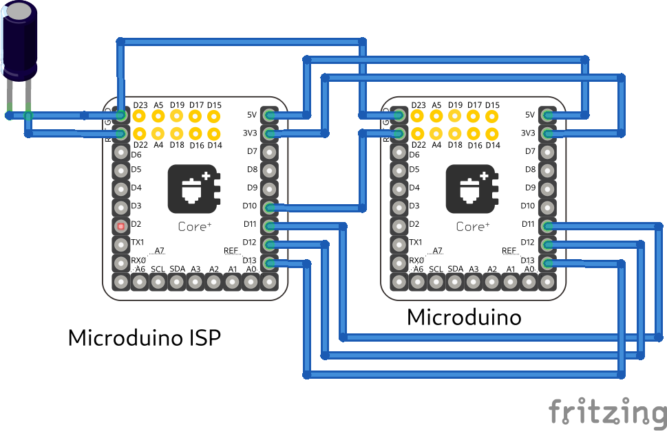

Howto per Stima versione 3¶
Caratteristiche hardware delle singole board¶
Stima core+644 e Stima core+1284¶
Le due board Stima core+644 e Stima core+1284 sono realizzate sul medesimo circuito stampato, appositamente progettato per accogliere indifferentemente il microcontrollore ATmega644 o ATmega1284 nelle configurazioni a 8 MHz a 3.3V o 16 MHz a 5V.
Per selezionare la corretta tensione di alimentazione sul microcontrollore, è sufficiente un punto di saldatura sullo switch delle piste del circuito stampato della scheda, a patto di aver selezionato il giusto quarzo in funzione della tensione di alimentazione.
Entrambe le board sono realizzate sullo standard UPIN-27.
Gli schemi elettrici realizzati in KiCad sono disponibili nella cartella:
kicad/r-map_v3/Microduino_Core+_DE
Stima I2C-Base¶

Basato sullo standard UPIN-27 e quindi impilabile come un normalissimo modulo Microduino, è stato progettato per far fronte alle necessità di alimentazione e collegamento su bus I2C dell’intero stack.
È dotato di un connettore a quattro pin, posto nella parte frontale del modulo (l’unico libero dal connettore UPIN-27) la cui funzione duale è quella di alimentare lo stack e di fornire il collegamento su bus I2C a tutti i moduli ad esso collegati.
Per la corretta configurazione hardware di tale modulo, è necessario effettuare un punto di saldatura sullo switch delle piste del circuito stampato atto a selezionare l’alimentazione (3.3V o 5V) e la corrispondente tensione di alimentazione del bus I2C sullo stack di moduli nel quale verrà installato.
Inoltre, tale switch presenta un’ulteriore via che prevede l’abilitazione dell’alimentazione sul bus I2C controllabile attraverso un pin di un microcontrollore impilato nello stack: funzione utile nel caso di test o di configurazione di particolari sensori I2C.
Si specifica che il connettore a quattro pin presenta clip di collegamento elettriche in materiale anti ossidante in grado di garantire un perfetto contatto elettrico nel corso degli anni. Inoltre è realizzato in modo tale da non permettere il distacco accidentale del cavo, assicurando la comunicazione. Altra peculiarità è quella di poter essere innestato in un unico verso evitando l’inversione di polarità di alimentazione e di collegamento del bus.
Tale board, inoltre, presenta due pin cortocircuitabili temporaneamente attraverso un jumper atto a consentire la configurazione della stazione attraverso porta seriale.
A causa dell’ingombro in altezza maggiorato rispetto ad una board standard dovuto al connettore a quattro pin, tale scheda è impilabile solamente attraverso l’adozione di due file di pin del tipo UPIN-27.
Gli schemi elettrici realizzati in KiCad sono disponibili nella cartella:
kicad/r-map_v3/Microduino_BASE_DE
Stima I2C-Digital¶
Il modulo in oggetto, realizza le funzioni di input o output di segnali digitali. Basato sullo standard UPIN-27, sarà dotato di un connettore a quattro pin del tipo usato nel modulo Stima I2C-Base ma adoperato per l’input o l’output di segnali digitali.
In particolare, sono presenti tre pin corrispondenti alle tre linee di interrupt fisiche fornite dai microcontrollori ed un pin di massa, comune alle tre linee.
A causa dell’ingombro in altezza maggiorato rispetto ad una board standard dovuto al connettore a quattro pin, tale scheda è impilabile solamente attraverso l’adozione di due file di pin del tipo UPIN-27.
Gli schemi elettrici realizzati in KiCad sono disponibili nella cartella:
kicad/r-map_v3/Microduino_DIGITALE_DE
Stima I2C-RTC¶

Tale modulo, compatibile con lo standard UPIN-27, assolve le funzioni di mantenimento della data ed ora nel tempo, attraverso l’adozione del Real Time Clock (RTC), interfacciato al microcontrollore attraverso bus I2C.
Per la corretta configurazione hardware di tale modulo, è necessario effettuare un punto di saldatura sullo switch delle piste del circuito stampato atto a selezionare l’alimentazione (3.3V o 5V).
Inoltre, per garantire il funzionamento dello stesso nel caso di distacco dell’alimentazione principale, è provvisto di un super condensatore in grado di fornire energia sufficiente a garantirne il funzionamento per alcune ore.
Un’ulteriore caratteristica del modulo, è quella di poter generare un segnale a frequenza costante e programmabile via software, che potrà essere convogliata su una delle tre linee digitali ad interrupt del microcontrollore, utilizzabile come segnale di risveglio per il microcontrollore impostato in risparmio energetico profondo, in modo tale da poter ridurre i consumi energetici dell’intera stazione.
Gli schemi elettrici realizzati in KiCad sono disponibili nella cartella:
kicad/r-map_v3/Microduino_RTC_DE
Stima I2C-FT232RL¶
Il modulo in questione, permette di collegare la porta seriale zero del microcontrollore ad un bus USB (ad esempio, quello di un computer) in modo tale da poter facilmente instaurare una comunicazione seriale con il microcontrollore. Tale metodo di comunicazione risulta comodo sia nel caso di upload del firmware che nel caso di configurazione della stazione.
Inoltre, l’integrato FT232RL è in grado di generare una tensione a 3.3V a bassa potenza in grado di alimentare direttamente il microcontrollore nella configurazione 3.3V e 8MHz, permettendone la programmazione dello stesso quando non è alimentato da una fonte di alimentazione esterna.
Tale tensione può o meno essere fornita al microcontrollore effettuando o meno una saldatura sul circuito stampato della board. L’intero modulo è realizzato secondo lo standard UPIN-27.
Gli schemi elettrici realizzati in KiCad sono disponibili nella cartella:
kicad/r-map_v3/Microduino_FT232R_DE
Stima SD-Card¶

Tale board permette il collegamento di una micro SD-Card al microcontrollore permettendo il salvataggio dei dati dei sensori e l’upload del firmware con il bootloader Digitecoboot. L’intera board è anch’essa basata sullo standard UPIN-27.
Gli schemi elettrici realizzati in KiCad sono disponibili nella cartella:
kicad/r-map_v3/Microduino_SD_DE
Stima SIM800C Power¶
Il modulo SIM800C Power costituisce il modulo di alimentazione per il modulo GSM/GPRS SIM800C ed include il connettore per la SIM Card in formato standard. Basato sul connettore UPIN-27, necessita di ulteriori 6 pin posti a contatto con la parte posteriore del connettore principale, atti al trasporto di tensioni di alimentazione e segnali verso il modulo SIM800C posto nella board Stima SIM800C Module.
Il comparto di alimentazione è realizzato mediante alimentatore switching e fornisce la giusta alimentazione al modulo SIM800C a partire dalla tensione di alimentazione primaria di 5V.
A causa dell’ingombro in altezza maggiorato rispetto ad una board standard dovuto alla componentistica elettronica, tale scheda è impilabile solamente attraverso l’adozione di una fila di pin del tipo UPIN-27.
Gli schemi elettrici realizzati in KiCad sono disponibili nella cartella:
kicad/r-map_v3/Microduino_GSM_DE/SIM_shield_DE
Stima SIM800C Module¶

In tale modulo basato sul connettore UPIN-27, trova alloggio il modulo GSM/GPRS SIM800C, due led di funzionamento ed il connettore SMA per il collegamento dell’antenna, introdotto in quanto molto più solido, robusto e di facile installazione rispetto a quello adottato sulle board Microduino.
Per garantire il risparmio energetico della stazione, il modulo GSM/GPRS è sempre spento e viene acceso solo nel momento in cui si rende necessario il suo utilizzo. L’operazione di accensione o spegnimento è effettuata ponendo a livello logico basso il pin dedicato del modulo per almeno un secondo. L’identificazione di tale pin è inserita nel file gsm_config.h nella cartella platformio/stima_ve/stima/include.
Il modulo è provvisto di due led di stato che forniscono indicazioni sul funzionamento e sullo stato della rete. In particolare, osservando il modulo frontalmente, il led di sinistra:
Acceso: il modulo è acceso ed è in funzionamento
Spento: il modulo è spento
Il led di destra:
Spento: il modulo è spento
Acceso per 64ms e spento per 800ms: il modulo non è registrato sulla rete
Acceso per 64ms e spento per 3000ms: il modulo è registrato sulla rete
Acceso per 64ms e spento per 300ms: comunicazione GPRS in corso
Si consiglia quindi di impilare per prima la board Stima SIM800C Power, di interporre un’ulteriore fila di pin del connettore UPIN-27 e di impilare in testa la board Stima SIM800C Module.
Gli schemi elettrici realizzati in KiCad sono disponibili nella cartella:
kicad/r-map_v3/Microduino_GSM_DE/SIM800C_DE
Stima I2C-HUB¶

{kind=link}
{kind=link}
{kind=link}
{kind=link}
{kind=link}
{kind=link}
{kind=link}
{kind=link}
{kind=link}
{kind=link}
{kind=link}
{kind=link}
{kind=link}
Il modulo Stima I2C-HUB garantisce la massima modularità dell’intero progetto della stazione meteorologica Stima, preservando la compatibilità con tutti i moduli Stima esistenti e garantendo il collegamento su bus I2C di dispositivi operanti a tensioni di 3.3 V e 5 V contemporaneamente.
L’HUB presenta una porta in ingresso e sei porte in uscita, utilizzabili per il collegamento e/o alimentazione di moduli su bus I2C. Ogni porta è realizzata mediante il connettore a quattro pin dello stesso tipo di quello installato negli altri moduli (Stima I2C-Base e Stima I2C-Digital).
Fatta eccezione per la porta in ingresso, la quale dev’essere sempre collegata ad un bus I2C a 5V, ognuna delle sei porte in uscita è configurabile indipendentemente per collegare e/o alimentare moduli funzionanti a tensioni di 3.3V o 5V, selezionabili facilmente e velocemente attraverso un jumper posto in prossimità di ogni porta. Inoltre, ogni singola porta è bufferizzata e protetta contro scariche elettrostatiche.
L’HUB è in grado di ricevere alimentazione a 5V attraverso il connettore USB tipo B o dalla porta in ingresso con connettore a quattro pin. Tale alimentazione, verrà propagata sull’intera linea a 5V e su tutti i moduli connessi all’HUB.
Diversamente, un circuito di alimentazione da 5V a 3.3V posto sull’HUB, provvederà ad alimentare tutti i moduli collegati sul bus a 3.3V.
Con riferimento alla porta in ingresso con connettore a quattro pin, si evidenzia che tale porta può essere adottata per collegare un HUB B ad un ad HUB A nel caso in cui vi sia la necessità di collegare un certo numero di periferiche sull’HUB B posto a distanza dall’HUB A. In tal caso, sarà sufficiente collegare attraverso un cavo, una delle sei porte in uscita dell’HUB A impostata a 5V al connettore in ingresso dell’HUB B.
Stima I2C-HUB consente la piena modularità della stazione Stima, garantendo molteplici topologie di collegamento dei moduli o dei sensori, facilitandone la connessione ed il cablaggio e dimenticandosi di calcolare di volta in volta i giusti valori di resistenze di pull-up e il massimo limite di capacità del bus I2C.
Gli schemi elettrici realizzati in KiCad sono disponibili nella cartella:
kicad/r-map_v3/Microduino_HUB_DE
Regolatore di tensione e carica della batteria con bus I2C DigitecoPower¶
Il regolatore di alimentazione DigitecoPower, di tipo switching, è progettato per garantire un uso efficiente della batteria con funzionamento in tampone.
Nel caso specifico, il regolatore monitorerà lo stato di salute della batteria fornendo i dati riassuntivi tramite interrogazione su bus I2C. È provvisto di una linea di alimentazione 12-30 V DC fornita da un pannello fotovoltaico o da un alimentatore DC, di una linea a 12V in uscita per la connessione di una batteria al piombo di tipo sigillato e di quattro pin per la connessione di tale alimentatore alla porta a quattro pin in ingresso al HUB.
In particolare, i valori monitorabili ed acquisiti attraverso la libreria DigitecoPower implementata nella libreria SensorDriver, sono:
Tensione di alimentazione
Corrente di alimentazione
Tensione di batteria
Corrente di batteria
Percentuale di carica della batteria
Tensione a 5V
Per la verifica istantanea del funzionamento, è presente un led di notifica tri-colore (rosso, giallo, verde) in grado di indicare la carica o meno della batteria ed il livello di energia della stessa:
Led rosso: batteria scarica
Led giallo: batteria mediamente carica
Led verde: batteria carica
Led lampeggiante lentamente: batteria in scarica
Led lampeggiante velocemente: batteria in carica
Ad esempio, un led rosso con un lampeggio veloce indica che la batteria è scarica e si sta caricando, diversamente, un led verde con lampeggio lento, indica che la batteria è carica ma si sta scaricando.
Per l’interfacciamento di tale modulo, si faccia riferimento al seguente schema di collegamento:
Collegamento |
Nome |
Descrizione |
|---|---|---|
1 |
VCC_IN |
ingresso alimentazione 12-30V DC VCC (+) |
2 |
GND_IN |
ingresso alimentazione 12-30V DC GND (-) |
3 |
VCC_BAT |
uscita alimentazione batteria 12V DC VCC (+) |
4 |
GND_BAT |
uscita alimentazione batteria 12V DC GND (-) |
5 |
LED |
LED di stato |
6 |
VCC_OUT |
uscita tensione di alimentazione HUB 5V DC VCC (+) |
7 |
SCL |
I2C SCL HUB |
8 |
SDA |
I2C SDA HUB |
9 |
GND_OUT |
uscita tensione di alimentazione HUB 5V DC GND (-) |
Display LCD 20x4 con interfaccia I2C¶
Il display consente di visualizzare lo stato della stazione: prossimo orario di acquisizione, stato del salvataggio dei dati su sd-card, stato dell’invio dei dati attraverso mqtt ed un valore rappresentativo dell’ultima acquisizione, utile per verificare in campo il corretto funzionamento della strumentazione.
Inoltre, è provvisto di un pulsante per l’accensione temporanea della retroilluminazione, evitando inutilmente il consumo della batteria.
Configurazioni hardware dei moduli Stima¶
Modulo Stima Ethernet (master)¶
{kind=link}
Il modulo Stima Ethernet consente la connessione della stazione attraverso Ethernet con eventuale alimentazione PoE ed è realizzabile assemblando i seguenti moduli (dal basso verso l’alto):
Stima I2C-Base @ 5V
Microduino Ethernet WIZ
Microduino RJ45
Stima core+1284 @ 5V
Stima I2C-RTC @ 5V
Stima FT232RL
Stima SD-Card
Successivamente sarà necessario fornire connettività Ethernet e alimentazione attraverso una delle seguenti modalità:
Power over ethernet (PoE)
Connettore micro USB posto sulla board Stima FT232RL
Connettore a quattro pin posto sulla board Stima I2C-Base
Collegando il modulo a Stima I2C-HUB
Modulo Stima GSM/GPRS (master)¶

Il modulo Stima GSM/GPRS consente la connessione della stazione attraverso GPRS ed è realizzabile assemblando i seguenti moduli (dal basso verso l’alto):
Stima I2C-Base @ 5V
Stima SIM800C Power
Stima SIM800C Module
Stima core+1284 @ 5V
Stima I2C-RTC @ 5V
Stima FT232RL
Stima SD-Card
Infine, è necessario collegare un’antenna GPRS Dual Band 850/1900 MHz attraverso il connettore SMA posto sulla board Stima SIM800C Module e fornire alimentazione attraverso una delle seguenti modalità:
Connettore micro USB posto sulla board Stima FT232RL
Connettore a quattro pin posto sulla board Stima I2C-Base
Collegando il modulo a Stima I2C-HUB
Modulo Stima Passivo (master)¶
Tale modulo passivo permette di acquisire i sensori collegati su bus I2C e di esporre i dati ad un altro modulo “attivo” attraverso Remote Procedure Call (RPC) ed è realizzabile assemblando i seguenti moduli (dal basso verso l’alto):
Stima I2C-Base @ 5V / 3.3V
Stima core+1284 @ 5V / Stima core+644 @ 3.3V
Stima I2C-RTC @ 5V / 3.3V
Stima FT232RL
A tale modulo, è possibile fornire alimentazione attraverso una delle seguenti modalità:
Connettore micro USB posto sulla board Stima FT232RL
Connettore a quattro pin posto sulla board Stima I2C-Base
Collegando il modulo a Stima I2C-HUB
Modulo Stima I2C-TH¶
Acquisisce i dati dai sensori di temperatura e umidità collegati su bus I2C fornendo elaborazioni relative a valori istantanei, minimi, medi e massimi. Tali dati potranno essere acquisiti da uno dei moduli atti a tale operazione, attraverso la libreria SensorDriver.
{kind=link}
Nello specifico, assemblare il modulo con le seguenti board (dal basso verso l’alto):
Stima I2C-Base @ 3.3V
Stima core+644 @ 3.3V
Stima FT232RL
Stima SD-Card
Per garantire il risparmio energetico della stazione, il modulo Stima I2C-TH è perennemente posto in risparmio energetico sufficiente al mantenimento del funzionamento del clock della CPU e del timer ad elevata precisione posto all’interno del microcontrollore.
Il timer è programmato per generare un interrupt allo scadere di un certo intervallo di tempo in secondi (programmabile via software), corrispondente all’intervallo di acquisizione dei sensori di temperatura e umidità.
Al termine delle operazioni di acquisizione dei sensori, il microcontrollore torna in risparmio energetico attendendo il successivo istante di acquisizione.
Modulo Stima I2C-Rain¶
Effettua un conteggio del numero di basculate di un pluviometro nell’arco di tempo desiderato. Tale dato sarà acquisito da uno dei moduli atti a tale operazione, attraverso la libreria SensorDriver.
{kind=link}
Nello specifico, assemblare il modulo con le seguenti board (dal basso verso l’alto):
Stima I2C-Base @ 3.3V
Stima core+644 @ 3.3V
Stima I2C-Digital
Stima FT232RL
Stima SD-Card
In genere la segnalazione di una basculata del pluviometro viene fornita con la chiusura di un contatto elettrico. Tale collegamento può essere realizzato mediante collegamento al pin di massa e ad una delle tre linee di interrupt presenti sul connettore a quattro pin sulla board Stima I2C-Digital.
Per garantire il risparmio energetico della stazione, il modulo Stima I2C-Rain è perennemente posto in risparmio energetico profondo e risvegliato all’occorrenza da un interrupt scaturito dalla basculata del pluviometro.
Modulo Stima sensor_config¶
questo è un modulo opzionale utilizzato una tantum per:
configurare sensori e moduli
configurare la stazione
formattare SD card
fare semplici operazioni di diagnostica
Nello specifico, assemblare il modulo con le seguenti board (dal basso verso l’alto):
Stima I2C-Base @ 5V
Stima core+ 1284 @ 5V
Stima FT232RL
Stima SD-Card
Collegare poi un encoder di tipo incrementale con pulsante (ad esempio Alps EC11B152442D) secondo questo schema:
D2: encoder A
D3: encoder B
D9: button A
GND: encoder common e button B
Configurazioni software dei moduli Stima¶
Installazione del software per la configurazione¶
Installare Rocky linux 8.
Aggiunta repository e installazione pacchetti da utente amministratore
dnf -y install epel-release
dnf install yum-plugin-copr
dnf copr enable simc/stable
dnf copr enable pat1/rmap
dnf config-manager --set-enabled powertools
dnf groupinstall rmap
Installazione del software per la compilazione dei firmware¶
Per compilazione del firmware è necessario installare PlatformIO https://platformio.org
Utilizzeremo per la copilazione i comandi a CLI tramite Command Line Tool. Quindi seguire le istruzioni a: https://platformio.org/install/cli
Installazione dei sorgenti dei firmware e dei progetti kicad¶
Scaricare e scompattare l'ultima release denominata Stima disponibile a: https://github.com/r-map/rmap/releases ad esempio: https://github.com/r-map/rmap/archive/refs/tags/3.4.tar.gz
Modulo Stima GSM/GPRS¶
Il progetto per platformio si trova in: platformio/stima_v3/stima
Aprire il file stima-config.h in platformio/stima_v3/stima/src:
Impostare la #define MODULE_TYPE con il valore STIMA_MODULE_TYPE_REPORT_GSM per definire una stazione di tipo report o STIMA_MODULE_TYPE_SAMPLE_GSM per definire una stazione di tipo sample
Aprire il file sensors_config.h nella cartella platformio/stima_v3/stima/include:
Settare la #define USE_JSON con il valore true
Settare le altre #define USE_SENSOR_XXX con valori true o false a seconda dei sensori che si vuole abilitare o disabilitare
Impostare il valore in decimi di mm di pioggia per ogni basculata del pluviometro nella #define RAIN_FOR_TIP
Impostare il numero di valori da leggere per ogni singolo sensore nella #define VALUES_TO_READ_FROM_SENSOR_COUNT (tra tutti i valori a disposizione, inserire quello più alto)
Impostare il valore in minuti per il calcolo di un’osservazione nella #define OBSERVATIONS_MINUTES (in genere 1)
Impostare il numero di osservazioni necessarie a produrre un dato utile per il report nella #define STATISTICAL_DATA_COUNT (in genere 15)
Impostare il microcontrollore su core+1284 a 5V
Compilare il firmware e caricarlo attraverso il cavo USB tramite il comando:
cd platformio/stima_v3/stima pio run -e 1284p16m -t upload
Inserire il jumper sulla board Stima I2C-Base, configurare la stazione e rimuovere il jumper a configurazione terminata
Per la configurazione:
Per ottenere una username e una password iscriversi al sito http://rmap.cc/registrazione/register/
Eventualmente (dopo la prima configurazione) ponticellare sulla scheda i pin "Set".
Eseguire i comandi:
rmapctrl --syncdb rmap-configure --wizard --station_slug=<nome_stazione> --height=<height> --stationname=<nome_descrittivo> --username=<username> --password=<password> --server=rmap.cc --lat=<xx.xxxxx> --lon=<xx.xxxxx> --mqttrootpath=report --mqttmaintpath=maint rmap-configure --addboard --station_slug=<nome_stazione> --board_slug=<board_name> --user=<username> --serialactivate --mqttactivate --mqttuser=<username> --mqttpassword=<password> --mqttsamplerate=900 rmap-configure --addsensors_by_template=stima_report_thpb --station_slug=<nome_stazione> --board_slug=<nome_board> --user=<username> --password=<password> --upload_to_server rmap-configure --config_station --station_slug=<nome_stazione> --board_slug=<nome_board> --username=<username> --baudrate 115200
sostituendo i valori <> con opportuni valori.
Rimuovere il ponticello ai pin "Set".
Modulo Stima Ethernet¶
Il progetto per platformio si trova in: platformio/stima_v3/stima
Aprire il file stima-config.h in platformio/stima_v3/stima/src:
Impostare la #define MODULE_TYPE con il valore STIMA_MODULE_TYPE_REPORT_ETH per definire una stazione di tipo report o STIMA_MODULE_TYPE_SAMPLE_ETH per definire una stazione di tipo sample
Aprire il file sensors_config.h nella cartella platformio/stima_v3/stima/include:
Settare la #define USE_JSON con il valore true
Settare le altre #define USE_SENSOR_XXX con valori true o false a seconda dei sensori che si vuole abilitare o disabilitare
Impostare il valore in decimi di mm di pioggia per ogni basculata del pluviometro nella #define RAIN_FOR_TIP
Impostare il numero di valori da leggere per ogni singolo sensore nella #define VALUES_TO_READ_FROM_SENSOR_COUNT (tra tutti i valori a disposizione, inserire quello più alto)
Impostare il valore in minuti per il calcolo di un’osservazione nella #define OBSERVATIONS_MINUTES (in genere 1)
Impostare il numero di osservazioni necessarie a produrre un dato utile per il report nella #define STATISTICAL_DATA_COUNT (in genere 15)
Impostare il microcontrollore su core+1284 a 5V
Compilare il firmware e caricarlo attraverso il cavo USB tramite il comando:
cd platformio/stima_v3/stima pio run -e 1284p16m -t upload
Inserire il jumper sulla board Stima I2C-Base, configurare la stazione e rimuovere il jumper a configurazione terminata.
Per la configurazione:
Per ottenere una username e una password iscriversi al sito http://rmap.cc/registrazione/register/
Eventualmente (dopo la prima configurazione) ponticellare sulla scheda i pin "Set".
Eseguire i comandi:
rmapctrl --syncdb rmap-configure --wizard --station_slug=<nome_stazione> --height=<height> --stationname=<nome_descrittivo> --username=<username> --password=<password> --server=rmap.cc --lat=<xx.xxxxx> --lon=<xx.xxxxx> --mqttrootpath=report --mqttmaintpath=maint rmap-configure --addboard --station_slug=<nome_stazione> --board_slug=<nome_board> --user=<username> --serialactivate --mqttactivate --mqttuser=<username> --mqttpassword=<password> --mqttsamplerate=900 --tcpipactivate --tcpipntpserver="it.pool.ntp.org" --tcpipname=stima rmap-configure --addsensors_by_template=stima_report_thpb --station_slug=<nome_stazione> --board_slug=<nome_board> --user=<username> --password=<password> --upload_to_server rmap-configure --config_station --station_slug=<nome_stazione> --board_slug=<nome_board> --username=<username> --baudrate 115200
sostituendo i valori tra <> con opportuni valori.
Rimuovere il ponticello ai pin "Set".
Modulo Stima Passive¶
Il progetto per platformio si trova in: platformio/stima_v3/stima
Aprire il file stima-config.h platformio/stima_v3/stima/src:
Impostare la #define MODULE_TYPE con il valore STIMA_MODULE_TYPE_PASSIVE per definire una stazione di tipo passivo
Aprire il file sensors_config.h nella cartella platformio/stima_v3/stima/include:
Settare la #define USE_JSON con il valore true
Settare le altre #define USE_SENSOR_XXX con valori true o false a seconda dei sensori che si vuole abilitare o disabilitare
Impostare il valore in decimi di mm di pioggia per ogni basculata del pluviometro nella #define RAIN_FOR_TIP
Impostare il numero di valori da leggere per ogni singolo sensore nella #define VALUES_TO_READ_FROM_SENSOR_COUNT (tra tutti i valori a disposizione, inserire quello più alto)
Impostare il valore in minuti per il calcolo di un’osservazione nella #define OBSERVATIONS_MINUTES (in genere 1)
Impostare il numero di osservazioni necessarie a produrre un dato utile per il report nella #define STATISTICAL_DATA_COUNT (in genere 15)
Compilare il firmware e caricarlo attraverso il cavo USB tramite il comando:
cd platformio/stima_v3/stima pio run -e 1284p16m -t upload
Inserire il jumper sulla board Stima I2C-Base, configurare la stazione e rimuovere il jumper a configurazione terminata
Modulo Stima I2C-TH¶
Aprire lo sketch i2c-th.ino nella cartella platformio/stima_v3/i2c-th
Aprire il file sensors_config.h nella cartella platformio/stima_v3/i2c-th/include:
Settare la #define USE_JSON con il valore false
Settare le altre #define USE_SENSOR_XXX con valori true o false a seconda dei sensori che si vuole abilitare o disabilitare
Impostare il numero di valori da leggere per ogni singolo sensore nella #define VALUES_TO_READ_FROM_SENSOR_COUNT (tra tutti i valori a disposizione, inserire quello più alto)
Impostare il valore in minuti per il calcolo di un’osservazione nella #define OBSERVATIONS_MINUTES (in genere 1 o in accordo con quanto impostato per la compilazione dello sketch stima.ino)
Impostare il numero di osservazioni necessarie a produrre un dato utile per il report nella #define STATISTICAL_DATA_COUNT (in genere 15 o in accordo con quanto impostato per la compilazione dello sketch stima.ino)
Compilare il firmware e caricarlo attraverso il cavo USB tramite il comando:
cd platformio/stima_v3/i2c-th pio run -e 644pa8m -t upload
Modulo Stima I2C-Rain¶
Il progetto platformio si trova nella cartella: platformio/stima_v3/i2c-rain
Aprire il file sensors_config.h nella cartella platformio/stima_v3/i2c-rain/include:
Settare la #define USE_JSON con il valore false
Settare le altre #define USE_SENSOR_XXX con valori true o false a seconda dei sensori che si vuole abilitare o disabilitare
Impostare il numero di valori da leggere per ogni singolo sensore nella #define VALUES_TO_READ_FROM_SENSOR_COUNT (tra tutti i valori a disposizione, inserire quello più alto)
Impostare la quantità di pioggia espressa in decimi di millimetro da conteggiare per ogni basculata del pluviometro nella #define RAIN_FOR_TIP
Compilare il firmware e caricarlo attraverso il cavo USB tramite il comando:
cd platformio/stima_v3/i2c-rain pio run -e 644pa8m -t upload
Compilazione e caricamento del bootloader Digitecoboot¶
Aprire il file avr_conf nella cartella digitecoboot
Editare la variabile AVR_DIR inserendo il percorso corretto per la directory AVR
Nella cartella digitecoboot compilare il bootloader attraverso - make atmega644p - make atmega1284p
La compilazione produce i seguenti files: - digitecoboot_atmega644p.hex: booatloader per core+644 - digitecoboot_atmega1284p.hex: booatloader per core+1284
Caricare il bootloader attraverso un programmatore impostando i seguenti parametri: stk500v1, 19200 baud, Low fuse 0xFF, Extended fuse 0xFD, High fuse 0xD0
Questo è un esempio dei comandi da impartire a avrdude:
avrdude -v -patmega1284p -cavrisp -P/dev/ttyUSB0 -b19200 -e -Ulock:w:0x3F:m -Uefuse:w:0xFD:m -Uhfuse:w:0xD0:m -Ulfuse:w:0xFF:m
avrdude -v -patmega1284p -cavrisp -P/dev/ttyUSB0 -b19200 -V -U digitecoboot_atmega1284p.hex
avrdude -v -patmega1284p -cavrisp -P/dev/ttyUSB0 -b19200 -U lock:w:0x0F:m
- Per usare arduino come programmatore riferirsi a:
https://docs.arduino.cc/built-in-examples/arduino-isp/ArduinoISP
E' possibile utilizzare due moduli microduino core+, uno 1284p16m da usare come programmatore e il secondo con la stessa tensione di funzionamento da programmare collegati come da schema: 
Un esempio di connessione rapida (il condensatore elettrolitico è assente):
Programmare il microduino-core+ da usare come ISP con il firmware ArduinoIsp in ambiente platformio che si trova in platformio/stima_v3/arduino_isp
ed eseguire:
make atmega644p_isp
oppure:
make atmega1284p_isp
Compilazione del firmware in formato binario¶
Compilare il firmware per i moduli Stima secondo quanto scritto ai punti precedenti
Localizzare il file firmware.elf compilato, solitamente - rmap/platformio/stima_v3/stima/.pio/build/1284p16m
Attraverso una consolle o il prompt dei comandi, eseguire - ~/.platformio/packages/toolchain-atmelavr/bin//avr-objcopy -I ihex -O binary firmware.elf FIRMWARE.BIN
Upload del firmware tramite micro SD-Card attraverso Digitecoboot¶
Copiare il file FIRMWARE.BIN su una micro SD-Card formattata in FAT32
Creare un file sulla scheda SD con il nome esattamente corrispondente alla versione del firmware: ad esempio "3.6"
Inserire la micro SD-Card in uno dei moduli Stima Ethernet, Stima GSM/GPRS, Stima I2C-TH o Stima-Rain
Alimentare il modulo e attendere 30 secondi per la fine del caricamento del firmware
Spegnere il modulo e rimuovere eventualmente la micro SD-Card contenente il firmware
Verificare sul display LCD la corretta versione del firmware
Se necessario, inserire la micro SD-Card utile per il funzionamento del modulo (senza il file FIRMWARE.BIN)
Alimentare il modulo
Configurazione moduli e sensori¶
Per configurare moduli e sensori utilizzare lo sketch sensor_config_menu_sdcard presente nella cartella platformio/stima_v3
E' sicuramente necessario se si voglio utilizzare più sensori o moduli dello stesso tipo.
Fare riferimento al manuale utente per il suo utilizzo.
Assemblaggio stazione Stima¶
Per assemblare una stazione Stima, è necessario disporre di:
Stima I2C-Master nella versione GSM/GPRS o Ethernet
Stima I2C-HUB
Stima I2C-TH
Stima I2C-Rain
Sensore di temperatura e umidità Digiteco TU022 (con sensore HYT221 o HYT271) oppure sensore di temperatura ADT7420 e sensore di umidità HIH6100
Pluviometro Digiteco PL005 o Digiteco PL010 o qualsiasi altro pluviometro con uscita a contatto
Cavi di collegamento:
per sensore di temperatura e umidità Digiteco TU022: cavo 4 poli con connettore a vite lato sensore e connettore 4 pin lato HUB
o per sensori ADT7420 e HIH6100 con cavi a 4 poli per sensore a saldare lato sensore e connettore 4 pin lato HUB
per pluviometro a contatto: cavo a 2 poli con connettore 4 pin lato modulo Stima I2C-Rain
Antenna dual/quad band GPRS con connettore SMA per stazione GSM/GPRS
Contenitore stagno IP66 310x425x160
Batteria sigillata al piombo 12V e relativi cavi di collegamento con fusibile di protezione
Pannello fotovoltaico 20W o sorgente di alimentazione continua 12-30 V
DigitecoPower: se presente batteria tampone 12V con pannello fotovoltaico o sorgente di alimentazione esterna DC
Palo acciaio inox diametro 48 mm
Collare alluminio anodizzato per fissaggio a palo diametro 48 mm
Morsetto alluminio anodizzato per fissaggio a sensore diametro 40 mm
Braccetto alluminio anodizzato cilindrico per fissaggio del morsetto sensore al collare del palo
Supporto per pluviometro
Display I2C LCD con supporto in alluminio
Supporti per moduli Stima su guida DIN
Una volta aver collegato i sensori, i moduli Stima, compilato i firmware e configurato tutti i moduli, così come illustrato nei capitoli precedenti, la stazione è pronta per essere utilizzata.
Di seguito un esempio di installazione di una stazione Stima GSM/GPRS con:
Stima I2C-TH
Stima I2C-Rain
Stima I2C-HUB
DigitecoPower
Batteria sigillata 12V
Pannello fotovoltaico

A partire da sinistra, è visibile il modulo Stima GSM/GPRS dotato di connettore tipo SMA per il collegamento dell’antenna. Al centro è visibile il modulo Stima I2C-TH e subito a destra è posizionato il modulo Stima I2C-Rain. Stima I2C-HUB collega i tre moduli, preleva l’alimentazione attraverso il connettore in ingresso in basso a destra dal modulo DigitecoPower e dispone di altre due porte libere per il collegamento di ulteriori sensori e moduli su bus I2C.
Sono ben visibili i jumper, uno per porta, per la selezione della corrispondente tensione di alimentazione (5V o 3.3V) per i moduli Stima e per i sensori I2C.

{kind=link}
Appendici¶
Elenco PIN utilizzati¶
File di definizione |
Macro |
valore |
|---|---|---|
sensor_config_menu_sdcard/src/sensor_config.ino |
encA |
2 |
sensor_config_menu_sdcard/src/sensor_config.ino |
encB |
3 |
stima/include/gsm_config.h |
SIM800_ON_OFF_PIN |
5 |
stima/src/stima-config.h |
RTC_INTERRUPT_PIN |
6 |
stima/src/stima-config.h |
SDCARD_CHIP_SELECT_PIN |
7 |
stima/src/stima-config.h |
CONFIGURATION_RESET_PIN |
8 |
sensor_config_menu_sdcard/src/sensor_config.ino |
encBtn |
9 |
stima/src/stima-config.h |
W5500_CHIP_SELECT_PIN |
10 |
stima/src/stima-config.h |
GSM_ON_OFF_PIN |
SIM800_ON_OFF_PIN |
Elenco indirizzi I2C¶
moduli:
File di definizione |
Macro |
valore |
|---|---|---|
Rmap/registers-master.h |
I2C_MASTER_DEFAULT_ADDRESS |
(0x20) |
Rmap/registers-rain.h |
I2C_RAIN_DEFAULT_ADDRESS |
(0x21) |
Rmap/registers-power.h |
I2C_POWER_DEFAULT_ADDRESS |
(0x4A) |
Rmap/registers-wind.h: |
I2C_WIND_DEFAULT_ADDRESS |
(0x45) |
Rmap/registers-th.h |
I2C_TH_DEFAULT_ADDRESS |
(0x23) |
Rmap/registers-radiation.h |
I2C_SOLAR_RADIATION_DEFAULT_ADDRESS |
(0x47) |
opzionali:
File di definizione |
Macro |
valore |
|---|---|---|
Rmap/registers-leaf.h |
I2C_LEAF_DEFAULT_ADDRESS |
(0x65) |
Rmap/registers-opc.h |
I2C_OPC_DEFAULT_ADDRESS |
(0x55) |
Rmap/registers-thr.h |
I2C_THR_DEFAULT_ADDRESS |
(0x23) |
Rmap/registers-thr.h |
I2C_THR_TEMPERATURE_DEFAULT_ADDRESS |
(0x49) |
Rmap/registers-thr.h |
I2C_THR_HUMIDITY_DEFAULT_ADDRESS |
(0x27) |
sensori:
File di definizione |
valore |
|---|---|
HYT |
(0x28) |
SHT |
(0x44) |
ADC:
File di definizione |
valore |
|---|---|
ADC radiation |
(0x48) |
ADC power |
(0x49) |
display LCD
File di definizione |
Macro |
valore |
|---|---|---|
include/lcd_config.h |
LCD_I2C_ADDRESS |
(0x3F) |
include/lcd_config.h |
LCD_I2C_SECONDARY_ADDRESS |
(0x27) |